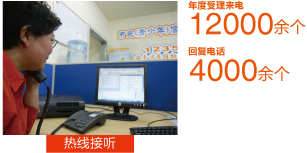
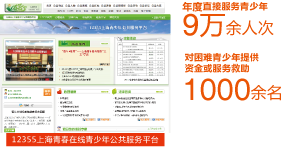
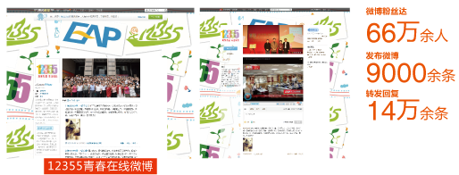
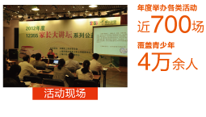
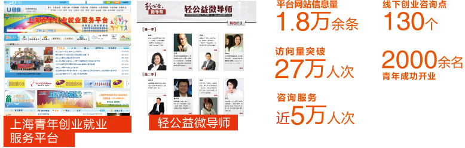
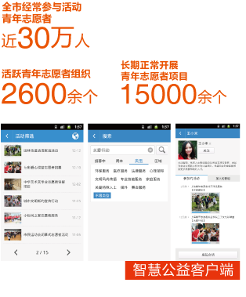

上海共青团积极参与“智慧城市”建设，不断提高信息化工作水平，逐步构架起服务热线、公共网站、移动终端相配合，线上服务、线下活动相呼应的青少年公共服务平台，拓展服务功能，提升维权能力，使我们对青少年的工作更加点对点，面对面。
依托全媒体平台联动与整合，上海各级团组织结合互联网的特点开展了丰富多彩的线上线下活动，引导青年成长、演绎精彩文化；上海各界青年也自发的组织了形式多样的集体活动，在青年发展中唱响了放飞梦想的青春之歌。



12355上海青春在线青少年公共服务平台，通过热线呼叫中心、官方网站、官方发布微博倾听青年心声，专家团队、专业社工线下服务，年度直接服务青少年达9万余人次


上海青年创业就业服务平台访问量突破27万余人次，帮助2000余名青年成功开业
通过上海青年志愿者智慧公益平台构建了宣传、招募、记录、分享的线上平台，并且引入社会资源，盘活志愿者公益积分，吸引青年的广泛参与。
